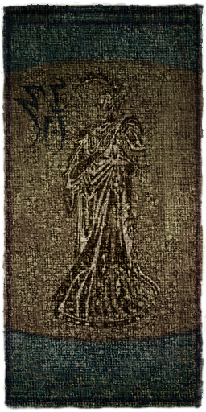
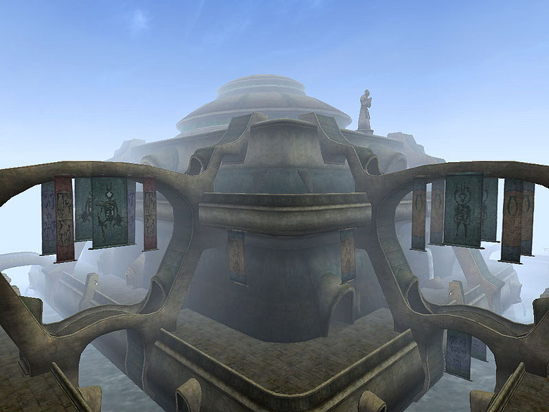
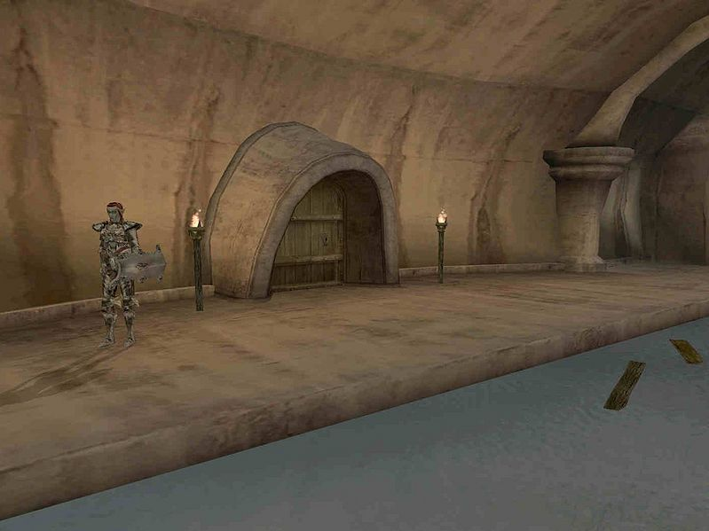
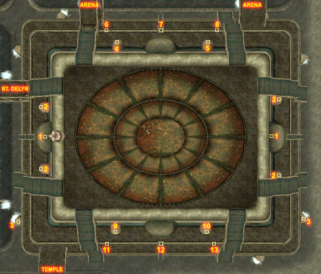
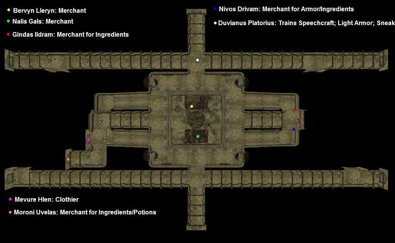

|  |
|
 The St. Olms Canton |
|
 The shrine Assernerairan |
|
 Map of Vivec's St. Olms canton |
Two House Hlaalu Councilors have their home here. Yngling Half-Troll is located in Yngling Manor, Dram Bero is downstairs in the Haunted Manor, behind a locked (50) door. If you found a lost Ebony mine, you can get a nice Daedric weapon from Bero. In the St. Olms Temple, Vaval Selas is a faction-less healer, offering potions and ingredients as well as spells.
To get here, enter The Waistworks and leave through any of the four long halls on the upper level. A Plaza entrance should be on the outside balcony, next to any of the upper-level Waistworks exits.
You'll find several trade halls here with goods from all over Vvardenfell; the Tailors and Dyers Hall, Brewers and Fishmongers Hall, Farmers and Laborers Hall all have several merchants. Nivos Drivam, a trader in the Tanners and Miners Hall, has jewels, raw glass and ebony, as well as scrap metal.
The only people here are J'Dhannar and Sevisa Teran. Roughly in the middle is the entrance to the St. Olms Storage, where you may find the Shrine of St. Felms, out of a few locations.
Addhiranirr is hiding at the east end trying to avoid a Census and Excise agent. Assernerairan houses a shrine dedicated to the god Mehrunes Dagon. A skooma addict is wandering in the side-tunnels.
Bridges connect to Arena, Temple and St. Delyn. There are no Gondola services here.
|  Services in the Waistworks |